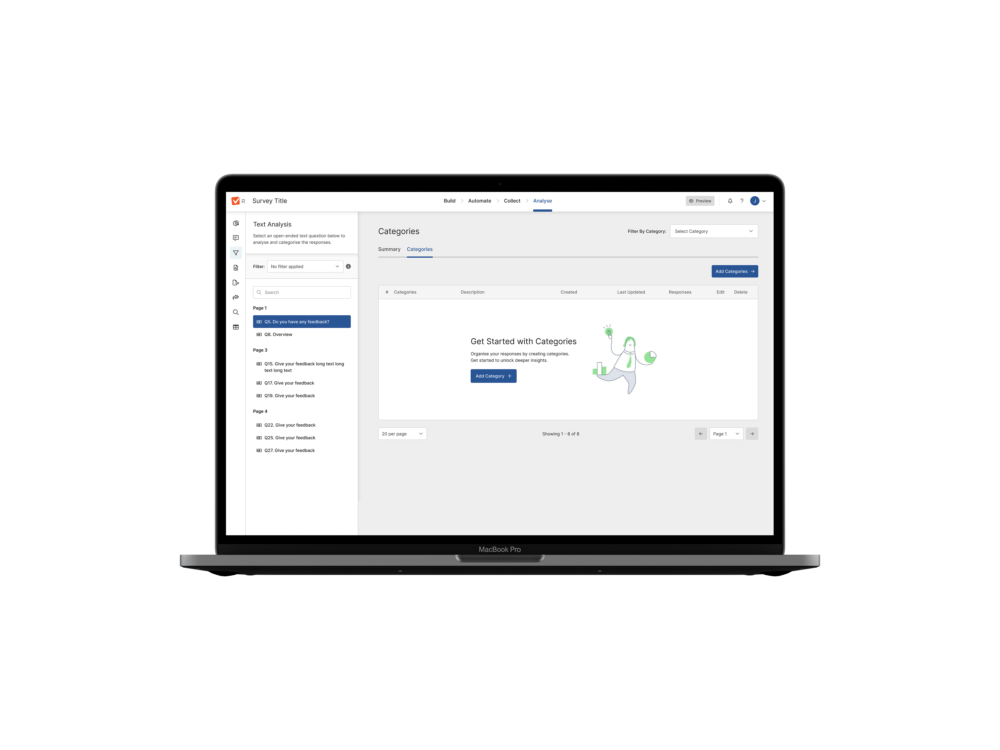
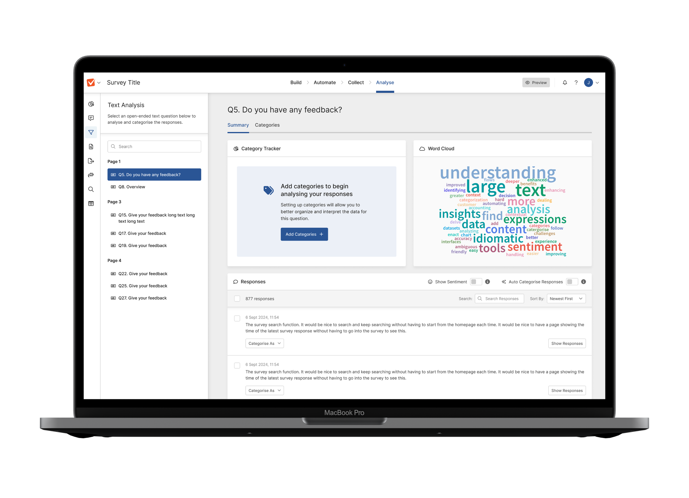
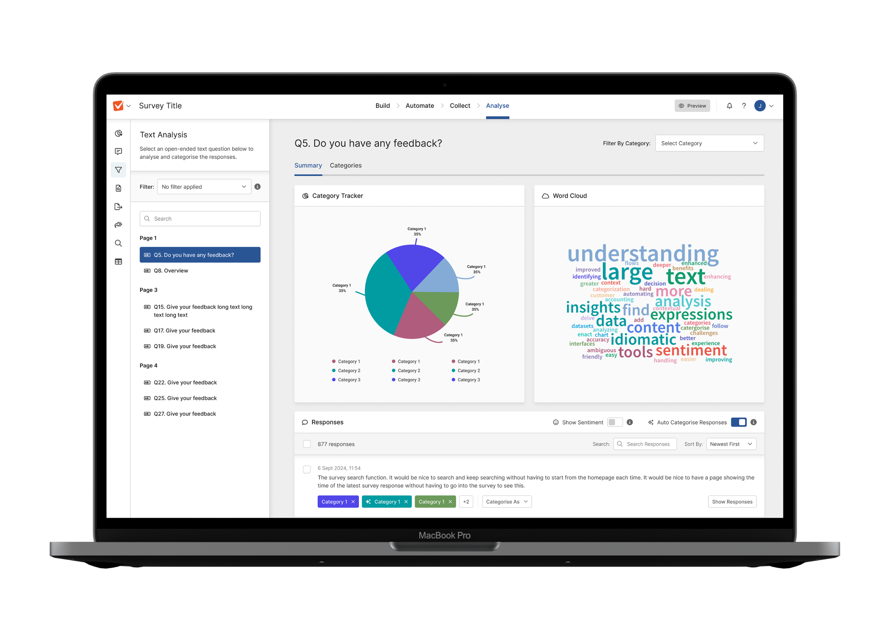
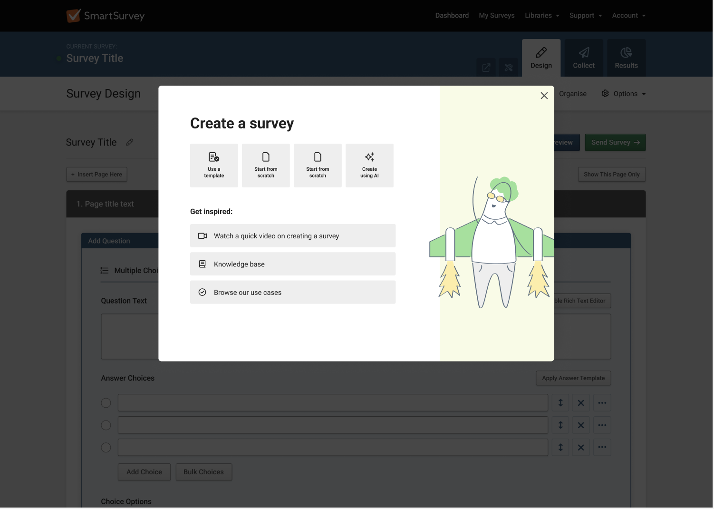
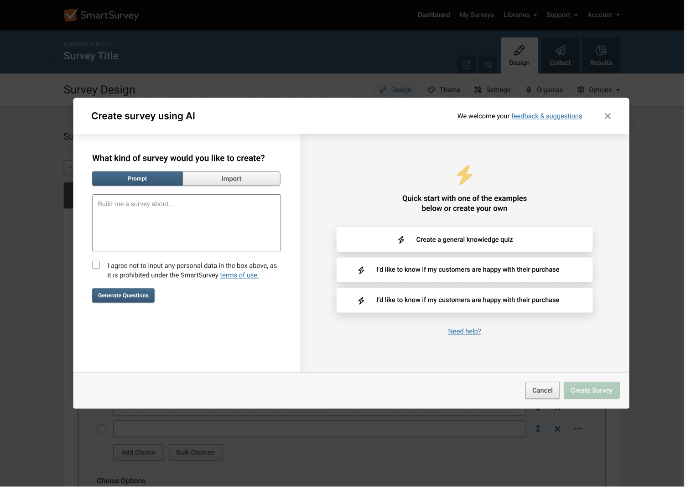
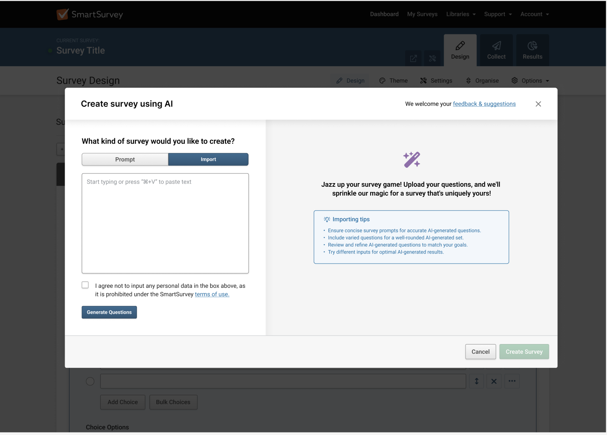
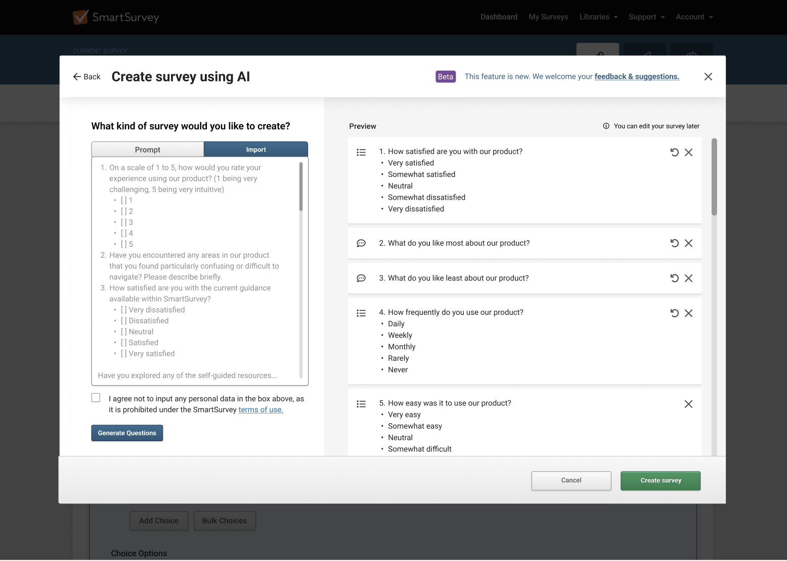
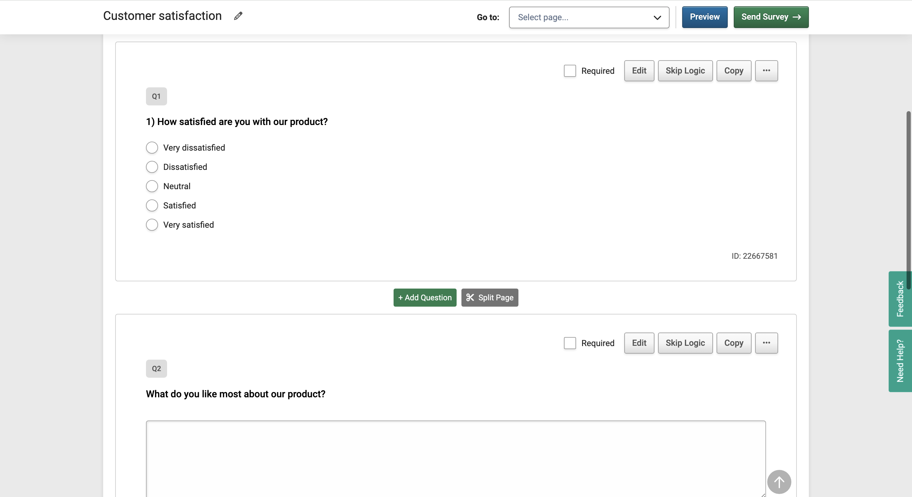

Summary:
We introduced text analysis tools to help users easily understand open-ended survey responses. Features like word clouds, response breakdowns, and AI-driven auto-categorisation made it faster and simpler to organise and analyse data.
My role:
Product Designer
Contributions:
- + User Experience
- + Visual Design
- + User testing/research
- + Design systems
- + Ideation / workshop
Team:
- + Myself
- + 1 Product Manager
- + 1 Customer Success Manager
- + 2 Testers
- + 3 Front-end engineers
- + 1 Back-end engineer
Overview
We enhanced our platform with text analysis tools to simplify how users handle open-ended survey responses. By introducing features like word clouds, response breakdowns, and AI-driven auto-categorisation, we streamlined the process of organising and interpreting data. These updates saved users time, improved engagement, and made data insights more accessible.
- + Conducting and leading user research in collaboration with PM
- + Managing key-stakeholders
- + Leading workshops on ideation and refinement
- + Developing UI elements, visual assets, and interaction designs.
Problem
Users struggled to interpret open-ended responses, spending too much time manually categorising data. This led to delays and inconsistent insights, making analysis a pain point for many.
User and Business Goals
- + Simplify text analysis and auto-categorisation.
- + Save users time with automation.
- + Increase engagement with visual insights.
- + Improve satisfaction by addressing pain points.
- + Align user needs with business growth.
Outcome
- + 32% tool adoption in two months.
- + 27% less time spent analysing data.
- + 25% higher satisfaction with features.
- + 14% boost in user retention.



The process of problem solving

After gathering feedback from 15 users, I explored how they manage and analyse open-ended survey responses. Users highlighted challenges with interpreting qualitative data, drawing actionable insights, and making the analysis process more efficient. These insights guided the development of text analysis and auto-categorisation features to simplify their workflows and enhance usability.
Key Insights:
- “Interpreting open-ended responses is time-consuming. We collect a lot of feedback, but categorising and analysing it for insights is overwhelming without the right tools.”
- “We need better ways to visualise qualitative data, like identifying trends or key themes. It’s hard to extract meaningful insights efficiently.”
- “It’s difficult to identify patterns or themes in responses quickly. Without categorisation, it takes too long to make sense of the data.”
- “Sometimes we’re unsure how to use open-ended responses effectively. They hold a lot of value, but analysing them feels like guesswork.”
Thought process
After identifying key user pain points with analysing open-ended survey responses, I shared my findings with my product
manager and key stakeholders. Users expressed frustrations with the time-consuming process of categorising data, difficulties in identifying patterns,
and the lack of tools to visualise qualitative insights.
To address these issues, I organised an ideation session with stakeholders from customer success, sales, engineering, and product management. Together,
we aligned on the opportunity to introduce text analysis features, such as word clouds, response breakdowns, and AI-driven auto-categorisation. These solutions
aimed to save users time, simplify workflows, and deliver actionable insights.
Problem Defenition
Users struggle to analyse open-ended survey responses efficiently. Categorising qualitative data and identifying patterns is time-consuming and often overwhelming without the right tools. The challenge lies in helping users streamline this process to save time, organise data effectively, and extract clear insights. Our goal is to introduce AI-driven text analysis and auto-categorisation, making data analysis faster, easier, and more user-friendly.
Affinity Diagramming
To address user challenges with analysing open-ended survey responses, we conducted an affinity diagramming session. Using insights from user interviews and competitive analysis, we grouped common themes and pain points, such as the time-intensive process of categorisation and the need for clearer visualisation tools. This process helped us identify opportunities like integrating AI for auto-categorisation and using word clouds and response breakdowns to simplify analysis.
Affinity Diagramming session board

Thought process
We evaluated ideas using an impact/effort matrix and chose to implement AI-driven text analysis and auto-categorisation. This solution was scalable, leveraging AI to handle large datasets consistently and efficiently. It was cost-effective, integrating with our existing AI tools to minimise development time. Most importantly, it addressed user pain points by simplifying data organisation and saving time, delivering clear and actionable insights.
User requirements:
- Implement a text box where users can copy and paste pre-built survey content.
- Develop an AI system that analyzes the pasted text and generates corresponding survey questions and formats.
- Enable the AI to recommend the most suitable question types (e.g., multiple-choice, open-ended) based on the content of the pasted text.
- Include a feature that allows users to regenerate or modify questions if the initial AI-generated output is incorrect or suboptimal.
- Implement a feedback mechanism where users can rate the accuracy of the AI-generated questions.
- Provide a real-time preview of the generated survey questions as users input text.
In order to create an MVP we decided to add onto the current AI flow
for prompts as this meant it was easier for users to discover, would not interrupt squad
work and meant we could tap into a steady stream of users already using the product.
Having discussed requirements, how we could utilise it in the current platform and
establishing the rough flow meant I could start with the initial designs.
Initial Designs
From this point I then reached out to previous users to get their initial thoughts and
responses on our proposed solution and was met with overall positive responses altohugh it
did give us more to consider which helped mitigate later issues.
- "The import feature looks like it would be really efficient. Being able to paste
questions and see them instantly in the survey preview seems like a huge
time-saver."
- "The design looks straightforward, but I wonder how well the AI handles more complex
questions. If it struggles, users might need to spend extra time adjusting things
manually."
- "The design seems straightforward to me, and the tips provided on the side add some
support. They seem like they could be useful and I like having pointers on how to
get the most out of my questions"
- "It’s great that the AI can format the questions, but I’d be concerned about it
changing the intent. Maybe an option to preserve the original question type would be
useful."
Thought process
Mapping out the flows based on what currently exsisted and what we could then add helped to clarify to stakeholders what we were aiming to achieve and to visualise the work so everyone was onboard with the general scope of work and the solutions we had prioritised.
Refining the Hi-fidleity designs
We built onto the exsisting flow building into the onboarding steps as well as the initial survey creation step. This meant new users would be caught upon first entry and also that we could build this into the flow of exsisting users.
SmartSurvey AI implementation

We added a content switcher to split between prompt and import - import allowing a user to copy and paste text from their creator or text editor of choice. This meant utilising the exsisting flow and kept the build to a minimum while also providing a light-weight version for users to bulk upload their survey questions.

We added initial tips as the better the clarity and quality of the initial the more effective the generated return. We wanted to encourage users to be broad as well as open to reviewing the generated outcome

Once a user has uploaded their text in the entry this then generates a return of set question types that correspond to our database and pre-set prompt. We also added the option to regenerate questions as although the accuracy was very high we wanted to apply fail-safes for users and assurance that they could simply change or experiemnt for greater results.

Once a user is happy with their survey content they then proceed to edit further - this covers styling, additional logic, distribution and results. This means a user can initially save time uploading content and then have the option to then customise to advanced options if needed or they can simply distribute.

Next steps
At the end of the hack-day, the project received positive feedback, but stakeholders were concerned about the AI's reliability and the limited question types. I scheduled a follow-up meeting to address these concerns, showcasing positive user feedback and a demo of the AI. We expanded the question types to 15 and planned more updates. We then released a BETA version to feedback providers for direct input on the new designs.
Feedback from Beta users
Following the stakeholder feedback and successful demo, we iterated on the initial design, expanded the AI capabilities to cover additional question types, and improved its reliability. The refined feature was then scheduled into our development roadmap. We implemented a beta rollout plan, using feature flags to release the new feature to 25% of both business and enterprise users. This allowed us to collect targeted feedback and monitor performance, refining the feature based on real-world usage before a broader release.
- 26% of users adopted the new AI feature within the first month
- Users reported a 35% reduction in time spent creating surveys
- Satisfaction scores for the survey creation process increased by 22%
- User retention improved by 10%